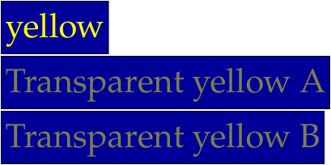

Contents
Summary
The command \defineprocesscolor allows to define a color by modifying an existing color.
Settings
| \defineprocesscolor[...][...][...=...,...] | |
| [...] | name |
| [...] | color |
| ...=...,... | inherits from \definecolor |
Description
Examples
Example of getting a transparent version of an existing color
-
\setupbodyfont[palatino,20pt] \definecolor [myyellow] [r=1,g=1.,b=0.] \defineprocesscolor [mytrspyellowA] [myyellow] [a=1,t=.5] \definecolor [mytrspyellowB] [\colorcomponents{myyellow},a=1,t=.5] \framed[background=color,backgroundcolor=darkblue,foregroundcolor=yellow]{yellow} \framed[background=color,backgroundcolor=darkblue,foregroundcolor=mytrspyellowA]{Transparent yellow A} \framed[background=color,backgroundcolor=darkblue,foregroundcolor=mytrspyellowB]{Transparent yellow B}
- 